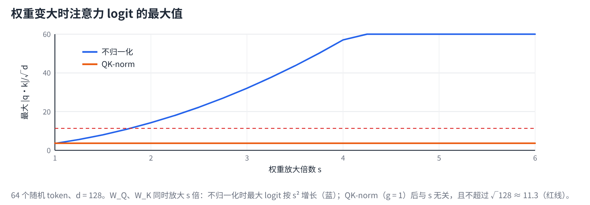
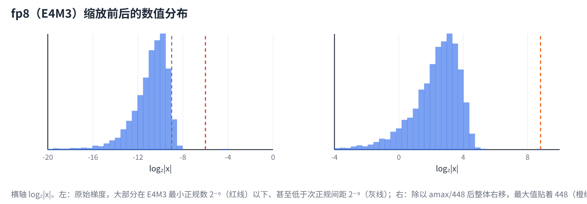
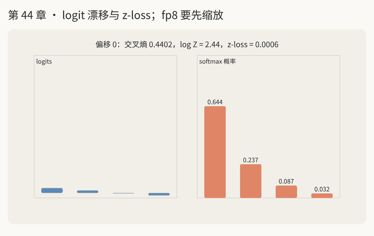

第 44 章 · 训练稳定性：logit 漂移与 z-loss、QK-norm、梯度裁剪、低精度格式与缩放因子
本地运行
git clone https://github.com/wikieden/math-and-eval-stats
cd math-and-eval-stats/code/notebooks
pip install jupyterlab torch numpy
jupyter lab ch44_training_stability.ipynb也可以下载后直接用 VS Code 打开 .ipynb 运行。需要 GPU 的章节在 Colab 里选「代码执行程序 → 更改运行时类型 → GPU」。
本章回答：大模型训练里 loss 突然飙升（spike）常见的数学原因是什么？为什么交叉熵看不见 logits 整体变大，z-loss 却看得见？QK-norm 怎么给注意力 logit 加上限？梯度裁剪为什么按全局范数？bf16、fp16、fp8 的数值范围各是多少，fp8 训练为什么一定要缩放因子？
讲解日期：2026-11-25 · 上一章：第 43 章 现代优化器 · 下一章：第 45 章 MoE 的数学
对应原文：ST-MoEtransformer-deep-dive/materials/text/papers/st-moe-2202.08906.txt（router z-loss L380–L410，式 L384）；FP8 Formats for Deep Learningllm-full-stack/materials/text/papers/fp8-formats-2209.05433.txt（E4M3 / E5M2 的定义 L27–L29，最大值 448 和 57344 L138）；小规模代理复现不稳定性transformer-deep-dive/materials/text/papers/small-scale-proxies-instability-2309.14322.txt（注意力 logit 增长与 QK-norm）
本章缩写：Z = softmax 的分母 Σe^{z}；z-loss = (log Z)² 的惩罚；QK-norm = 先对 q、k 做归一化再点积；E4M3 / E5M2 = fp8 的两种格式（4 位指数 3 位尾数 / 5 位指数 2 位尾数）；amax = 张量的最大绝对值；scale = 缩放因子。全部缩写见 附录 · 缩写与术语表
讲解
第一步：logit 漂移：softmax 看不见，z-loss 看得见（2026-11-25）
类比：温度计整体往上偏了 50 度，但你只比较“哪天更热”，就发现不了。
softmax 对 logits 整体加常数不变，交叉熵也不变；但 logits 的绝对值可以一路涨，直到 bf16 / fp16 下 e^{z} 的精度或范围出问题，或者训练动力学变得很敏感。ST-MoE 的 router z-loss（L380–L410）：
例子（logits [2, 1, 0, −1] 整体加 shift，c_z = 10⁻⁴）：
| shift | 交叉熵 | log Z | z-loss |
|---|---|---|---|
| 0 | 0.4402 | 2.44 | 0.0006 |
| 20 | 0.4402 | 22.44 | 0.0504 |
| 50 | 0.4402 | 52.44 | 0.2750 |
交叉熵一模一样，z-loss 随 log Z 平方增长，把 logits 拉回 0 附近（log Z ≈ 0）。PaLM 等在输出层也用了同样的 z-loss。
一句话：softmax 对整体平移不敏感，logits 可以无声地漂大；z-loss = c·(log Z)² 专门惩罚这个方向。
第二步：QK-norm：给注意力 logit 一个上界（2026-11-25）
注意力 logit q·k/√d 没有上界：训练中 W_Q、W_K 变大，logit 跟着变大，softmax 变成 one-hot（第 37 章：梯度消失），之后 loss spike。QK-norm：先把 q、k 各自归一化到长度 √d（RMSNorm / LayerNorm），再乘一个可学的增益 g：
例子（d = 128）：g = 1 时 logit 上限 11.31；g = 2 时 45.25。上限由一个可学参数直接控制，不再随权重范数无限增长。

图 44-1 · 横轴 W_Q、W_K 的整体放大倍数，纵轴注意力 logit 的最大值；不归一化时按倍数的平方增长（蓝），QK-norm 后被卡在 g²√d（橙）一句话：QK-norm 让注意力 logit 的上界由增益 g 决定、不随权重范数增长，是防注意力 logit 爆炸的常用手段。
第三步：梯度裁剪：按全局范数整体缩放（2026-11-25）
偶发的大梯度（坏 batch、数值尖峰）会一步把参数推出好区域。全局范数裁剪：
例子（两组参数的梯度 [3, 4] 和 [12]，全局范数 13，裁到 1）：[0.2308, 0.3077] 和 [0.9231]：每组都乘 1/13，方向不变。
为什么按全局而不是逐元素裁：逐元素裁剪改变梯度方向（大分量被截、小分量不动），全局裁剪只改长度。LLM 训练常用 c = 1.0；监控裁剪前的梯度范数本身就是发现不稳定的好指标（spike 前常先变大）。
一句话：全局范数裁剪只缩短梯度、不改方向；裁剪前的梯度范数是训练健康度的监控指标。
第四步：低精度格式：范围看指数位，精度看尾数位（2026-11-25）
| 格式 | 指数 / 尾数 | 最大值 | 最小正规数 | 相对精度 |
|---|---|---|---|---|
| fp32 | 8 / 23 | 3.4 × 10³⁸ | 1.2 × 10⁻³⁸ | 1.2 × 10⁻⁷ |
| bf16 | 8 / 7 | 3.4 × 10³⁸ | 1.2 × 10⁻³⁸ | 7.8 × 10⁻³ |
| fp16 | 5 / 10 | 65504 | 6.1 × 10⁻⁵ | 9.8 × 10⁻⁴ |
| fp8 E4M3 | 4 / 3 | 448 | 2⁻⁶ ≈ 0.0156 | 0.125 |
| fp8 E5M2 | 5 / 2 | 57344 | 6.1 × 10⁻⁵ | 0.25 |
（FP8 Formats 论文 L27–L29、L138）bf16 的范围和 fp32 一样，所以通常不需要缩放；fp16、fp8 范围窄，必须缩放。fp8 的约定：前向的权重和激活用 E4M3（精度高一点），反向的梯度用 E5M2（范围大一点）。
一句话：指数位决定范围、尾数位决定精度；bf16 范围同 fp32，fp8 范围只有几百到几万，必须配缩放因子。
第五步：fp8 训练：按 amax 缩放再量化（2026-11-25）
per-tensor 缩放：scale = amax / 448，存 x/scale（正好撑满 E4M3 的范围），用的时候再乘回去。
例子（4096 个梯度值，标准差 0.001，最大 0.05）：
| 做法 | 结果 |
|---|---|
| 直接转 E4M3 | 67% 的值落进次正规数的粗网格被舍成 0，平均相对误差 0.60 |
| 先除以 scale = 1.1 × 10⁻⁴ | 平均相对误差 0.023 |

图 44-2 · 横轴 log₂|x|，柱子是 4096 个梯度值的分布；左：不缩放，大部分落在 E4M3 最小正规数（红线）左边；右：除以 scale 后整体右移，最大值贴着 448值太小时，E4M3 只剩间距 2⁻⁹ ≈ 0.002 的次正规数，比这些梯度本身还大。实际系统还会：按历史 amax 估计 scale（delayed scaling）、按 block 而不是整个张量算 scale（DeepSeek-V3 用 1×128 / 128×128 的细粒度缩放）、主权重和优化器状态保持 fp32 / bf16。
场景代码：Transformer Engine 的 fp8 训练（真实库调用；本书环境没装，没跑过）：
import transformer_engine.pytorch as te
from transformer_engine.common.recipe import DelayedScaling, Format
recipe = DelayedScaling(fp8_format=Format.HYBRID, amax_history_len=16) # HYBRID：前向 E4M3、反向 E5M2
with te.fp8_autocast(enabled=True, fp8_recipe=recipe):
out = model(x)
一句话：fp8 要先按 amax 把张量缩放到格式的范围里再量化，否则小值大量变成 0；实践中用延迟缩放或分块缩放。
动画演示：logit 漂移与 z-loss

可交互版：animations/44-training-stability.html（滑块调 logits 的整体偏移和 z-loss 系数）。
怎么看：
- 左边柱子是 4 个 logits，右边是 softmax 概率：拖偏移时左边整体升高，右边一动不动（第一步）；
- 下方两条读数：交叉熵不变，z-loss 随偏移的平方增长；
- 切到“fp8 缩放”：直方图是梯度值，竖线是 E4M3 能表示的最小正规数；不缩放时大部分值落在线左边（第五步）。
练习与作答记录
题 1（第一步）：logits [0, 0, 0, 0]，log Z 是多少？要让 log Z = 0，logits 应该整体平移多少？
作答：（待作答）
题 2（第三步）：三组梯度 [1, 2]、[2]、[4]，裁剪阈值 c = 2，裁剪后各是多少？
作答：（待作答）
题 3（第四、五步）：一个张量的 amax 是 0.7，用 E5M2 存，scale 应该取多少？如果直接存，最小的正规数 6.1 × 10⁻⁵ 意味着什么样的值会进入次正规区？
作答：（待作答）
口诀
softmax 看不见整体漂移，z-loss 罚 log Z 的平方；
QK-norm 先归一，logit 上界 g 方乘根号 d；
梯度按全局范数裁，只缩长度不改方向；
指数管范围、尾数管精度，fp8 一定要缩放。
本章复习卡片
ST145（logit 漂移与 z-loss；QK-norm 的上界）、ST146（全局范数梯度裁剪）、ST147（bf16 / fp16 / fp8 的范围精度与 fp8 缩放因子）。练习做完后，按答错、卡住的地方补上。
附录 · 延伸阅读
留给以后深入学习用，不影响本章主线。★ 是建议先读的。
推荐阅读
| 读什么 | 读哪里 | 读它为了什么 |
|---|---|---|
| ★ ST-MoE（Zoph 2022） | §3（router z-loss，L380–L410） | z-loss 的提出与效果 |
| ★ FP8 Formats（Micikevicius 2022） | §2–3（L27–L165） | E4M3 / E5M2 的定义与取舍 |
| Small-scale proxies for instabilities（Wortsman 2023） | 注意力 logit 增长、输出 logit 发散两节 | 用小模型复现大模型的不稳定 |
| 《PyTorch 从里到外》第 26 章 混合精度 | 全章 | autocast、loss scaling |
| 第 22 章 数值计算 | 第三步 | 浮点格式与累加误差 |
数学原理
- softmax 平移不变：softmax(z + c𝟙) = softmax(z)；log Z(z + c𝟙) = log Z(z) + c。
- z-loss 的梯度：∂(log Z)²/∂z = 2 log Z·softmax(z)，沿 𝟙 方向把 logits 往下推。
- Cauchy-Schwarz：|q·k| ≤ ‖q‖‖k‖，QK-norm 把两边都固定。
- 浮点范围：最大值 ≈ 2^{(2^{e−1})}·(2 − 2^{−m})（E4M3 不保留无穷，最大 448 = 1.75 × 2⁸）；相对精度 2^{−m}。
公式清单
| 公式 | 意思 |
|---|---|
| \(\mathcal L_z = c_z(\log Z)^2\) | z-loss |
| \(\lvert q\cdot k\rvert/\sqrt d \le g^2\sqrt d\) | QK-norm 的上界 |
| \(g \leftarrow g\cdot\min(1, c/\|g\|)\) | 全局范数裁剪 |
| scale = amax / 448 | E4M3 的 per-tensor 缩放 |
代码对照：把本章的数字用代码算一遍
代码在仓库本地
math-and-eval-stats/solutions/chapter-code/ch44_training_stability.py，配套测试tests/test_ch44.py：
bash cd math-and-eval-stats/solutions/chapter-code uv run python ch44_training_stability.py uv run pytest tests/test_ch44.py
讲义 ↔ 代码：
| 讲义 | 公式 | 写法 | 跑出来 |
|---|---|---|---|
| 第一步 z-loss | c(log Z)² | ce_and_zloss(z + 50, 0) |
CE 0.4402、z-loss 0.275 |
| 第二步 QK-norm | g²√d | qk_logit_bound(128, 1.0) |
11.31 |
| 第三步 裁剪 | 全局范数 | clip_global(grads, 1.0) |
13 → 1 |
| 第四步 格式 | 表 | FORMATS |
448、57344 |
| 第五步 fp8 缩放 | amax/448 | fp8_scale(x)、round_e4m3 |
误差 0.60 → 0.023 |
关键几行：
lz = logsumexp(z); return lz - float(z[target]), coef * lz * lz # 交叉熵与 z-loss
s = min(1.0, max_norm / (total + 1e-12)) # 全局裁剪系数
q = 2.0 ** (np.maximum(e, -6) - 3); return np.round(x / q) * q # E4M3：3 位尾数，次正规区间距 2^-9
代码里才看得到的 3 件事：
- E4M3 的模拟是近似的：只处理了尾数舍入、次正规区和 ±448 截断，没有处理 NaN 编码和就近偶数舍入的细节。
- z-loss 系数很小：c_z = 10⁻⁴，正常 logits 下几乎不影响主损失，只在 log Z 变大时起作用。
- 没有画格式的数轴：E4M3 / E5M2 / bf16 的可表示范围图留给自己画（里程碑 ME-M27）。
自己改一改（不影响练习答案）：
- 用 E5M2（尾数 2 位、最小正规数 2⁻¹⁴）重写
round_e4m3，不缩放时还有多少值变成 0？ - 把
clip_global改成逐元素裁剪到 [−1, 1]，比较裁剪后梯度和原梯度的夹角。